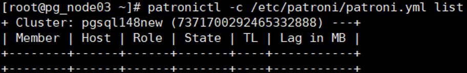

This section describes how to restore a PostgreSQL instance that has been backed up to its original location or a new location.
Context
Backup and replication copies can be used for restoration. Restoration to the original location or a new location is supported. Replication copies cannot be used for restoration to the original location.
Prerequisites
- Before restoration, ensure that the remaining space of the data directory at the target location for restoration is greater than the size of the copy used for restoration before reduction. Otherwise, restoration will fail.
- Before restoring data to a new location, ensure that the database installation user has the read and write permissions on the target path of restoration.
- If the resource to be restored is an active/standby MPP cluster, ensure that the active/standby database information is correct before stopping the database. Otherwise, you need to scan the restoration target resource.
- If the port of the target instance is occupied, release the occupied port before the restoration.
- If the target instance for restoration is a single instance, perform the following operation to stop the database. /usr/local/pgsql/bin/pg_ctl indicates the database instance installation path, and /usr/local/pgsql/data indicates the data path. Replace them with the actual paths.
su - postgres /usr/local/pgsql/bin/pg_ctl -D /usr/local/pgsql/data -l logfile stop
- If the target instance for restoration is a cluster instance, stop the service on each node. Next, stop the standby database and then the primary database. The procedure is as follows:
Pgpool cluster
- Stop the pgpool service on all nodes.
/usr/local/pgpool/bin/pgpool -m fast stop
- Stop the database.
su - postgres /usr/local/pgsql/bin/pg_ctl -D /usr/local/pgsql/data -l logfile stop
Patroni cluster
- Stop the patroni service on all nodes and the database.
systemctl stop patroni
- Run the patronictl -c /etc/patroni/patroni.yml list command on any node to check whether the node service is stopped. If the command output is an empty table, the node service has been stopped.

- Run the cat /etc/patroni/patroni.yml command to view the patroni.yml file and find the value of namespace. The following figure shows an example.

- Run the etcdctl del --prefix " namespace " command to delete the PostgreSQL cluster data from ETCD.
Example: etcdctl del --prefix " /service148new/ "

Before restoring log copies to the original or a new location, you need to configure the patroni.yml file in advance as follows:
method: OceanProtectPITR OceanProtectPITR: command: "mv $PGDATA/../OceanProtectData/DATADIR $PGDATA/../" no_params: True keep_existing_recovery_conf: TrueCLup cluster
- Log in to the CLup database management system.
- Choose HA Cluster > HA Management, find the target cluster, and click Offline. After the cluster is brought offline, the cluster status changes to Offline.
- Choose Instance > Instance List, find the target database instance, and click Stop to stop the standby database and then the primary database. After the database instances are stopped, their states change to Stopped.
- After the restoration job is complete, perform the following operation to bring the CLup cluster online:
Choose HA Cluster > HA Management, find the target cluster, and click Online. After the cluster is brought online, the cluster status changes to Online.
HACS
Before performing restoration, run the crm configure property maintenance-mode=true command to freeze the cluster. After the cluster is frozen, you can manually stop the PostgreSQL database. The procedure is as follows (stop the standby database first and then the primary database):
su - postgres /usr/local/pgsql/bin/pg_ctl -D /usr/local/pgsql/data -l logfile stop
Then, perform the restoration operation. After the PostgreSQL instance is successfully restored, run the crm configure property maintenance-mode=false command to unfreeze the HACS cluster.
- Stop the pgpool service on all nodes.
Procedure
- Choose Explore > Copy Data > Databases > PostgreSQL.
- Search for copies by PostgreSQL instance resource or copy. This section describes how to search for copies by resource.
On the Resources tab page, locate the resource to be restored by resource name and click the name.
- Select the year, month, and day in sequence to find the copy.
If
 is displayed below a month or date, copies exist in the month or on the day.
is displayed below a month or date, copies exist in the month or on the day. - Restore data to a specified point in time or using a specific copy.
Table 1 describes related parameters.
Table 1 Parameters for restoring a PostgreSQL instance Parameter
Description
Restore To
Select either Original location or New location.
NOTE:When performing restoration to a new location, if the copy has a tablespace directory other than the data directory, ensure that the operating system user who installs the database in the new location instance can access the tablespace directory with the same name on the host in the new location.
Tag
If you select New location for restoration, you can use Tag to quickly filter and manage resources.
Location
If you select Original location for restoration, the location of the current instance is displayed by default.
Target Host
Specify the target host, which is mandatory if you select New location for restoration.
Target Instance
Specify the target instance, which is mandatory if you select New location for restoration.
Script to Run Before Restoration
You can execute a self-defined script before a restoration job is executed or after it succeeds or fails, all based on your needs. You need to enter the absolute path of the script.
- The Windows OS supports .bat scripts.
- Non-Windows OSs support .sh scripts.
NOTE:
If Script to Run upon Restoration Success is configured, the status of the restoration job is displayed as Succeeded on the product even if the script fails to be executed. Check whether the job details contain a message indicating that the post-processing script fails to be executed. If yes, modify the script in a timely manner.
Script to Run upon Restoration Success
Script to Run upon Restoration Failure
- Click OK.
In the scenario where the PostgreSQL CLup cluster is restored to a new location, if the cluster username and password at the original location are different from those at the new location after the restoration is successful, perform the following operations:
- Log in to the CLup database management system and change the username and password of the cluster at the new location.
- Choose HA Cluster > Cluster Definition, modify Users in DB, Password in DB, Stream replication user, and Stream replication password of the cluster at the new location so that they are the same as those of the original cluster, and save the modification.
- Choose HA Cluster > HA Management, locate the corresponding cluster, and click Online. After the cluster is brought online, the cluster status changes to Online.
- Log in to the product WebUI to change the username and password of the target cluster in the new location.
- Choose Protection > Databases > PostgreSQL. Switch to the Instance tab page and find the database cluster instance to be restored.
- Modify Database Username, Database Password, Database Stream Replication Username, and Database Stream Replication Password so that they are the same as those of the original cluster. After the modification, the instance status is Online.
- Log in to the CLup database management system and change the username and password of the cluster at the new location.